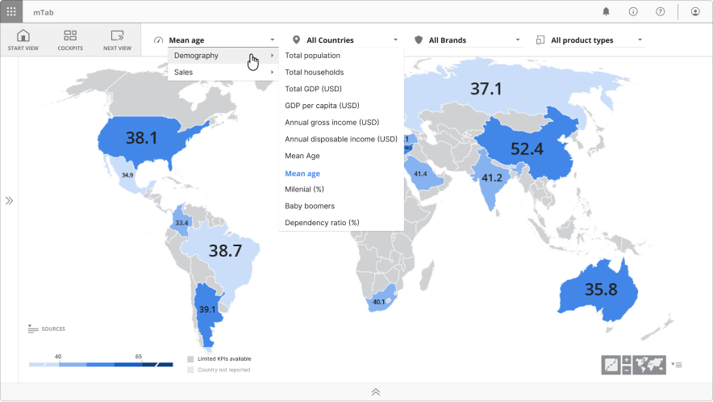
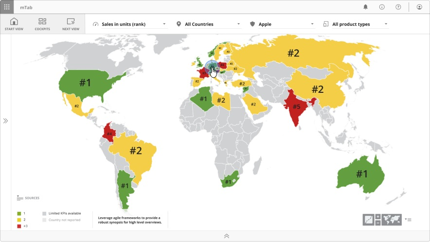
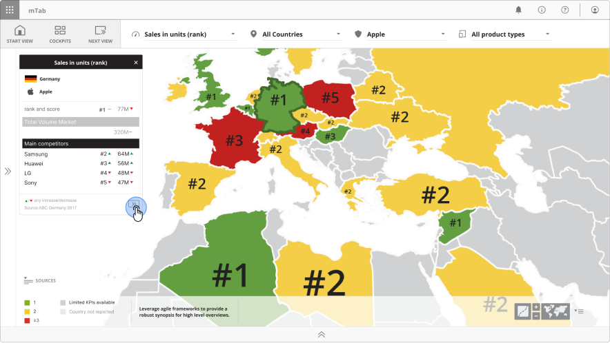
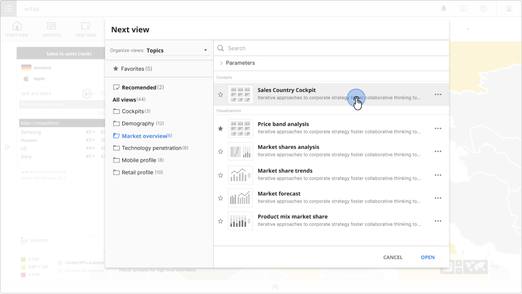
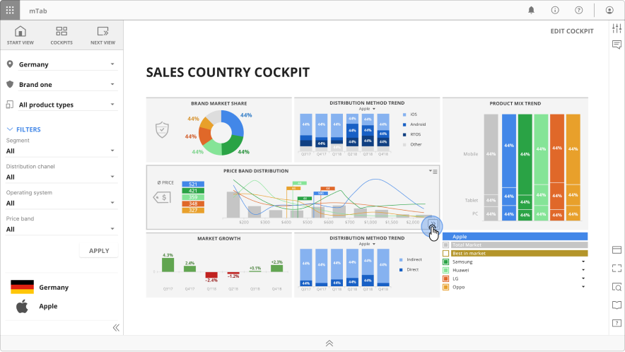
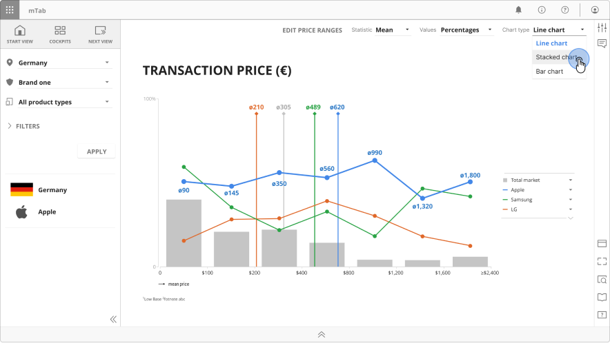

Discover & Stories
Guided data exploration and report editor for enterprise clients

Overview
Discover and Stories were companion modules within the mTab platform, designed for enterprise clients. Discover gave people a curated, interactive way to browse pre-built analytical views of their own research data, with no query-building required. Stories let them collect those views and arrange them into multi-page presentations to share or report on. As Head of Design, I led the design of both modules and coordinated the team working across them.
Challenge
Not everyone who needs research data is an analyst. Brand managers, product planners and executives had no interest in building cross-tabulations or designing reports. They wanted to find a standardised insight quickly, then turn it into something they could take into a meeting or send to a colleague.
So we had to design two modules that worked properly together, one for exploring and one for curating. Both simple enough for non-technical people, both able to cope with complex parameterised data across markets, brands and time periods.
My role
I was hands-on with the design of both modules while managing the designers working across them. For Discover we rebuilt the catalogue around clear navigation and parameter controls, so anyone could pivot across countries, brands and time periods without knowing the first thing about analysis. For Stories, we designed a curation workflow where users could assemble slides into narrative sequences, add chapter pages with editable text for context, and share or export the result as a polished presentation. I made sure the team kept the interaction patterns consistent across both modules, from parameter controls to navigation to visual language, so moving between exploring and curating felt like one continuous thing rather than two tools bolted together.
Outcome
Discover and Stories became the tools our customers opened every day, sitting neatly between raw data and something you could hand to a stakeholder. Users could easily go from exploring a single data point to presenting a full competitive report without leaving the platform.
What's next
Both Discover and Stories were dropped and all the user-created content was migrated into Halo.




